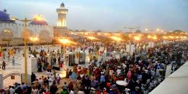
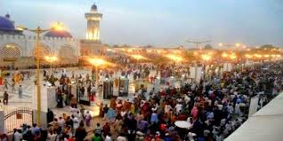

The Grand Magal of Touba is the annual religious pilgrimage of the Senegalese Mouride Brotherhood, one of the four tariqa (Islamic Sufi orders) of Senegal. On the 18th of Safar, the second month of the Islamic calendar, pilgrims gather in the holy Mouride city of Touba to celebrate the life and teachings of Cheikh Amadou Bamba, the founder of the brotherhood. The Grand Magal has been recognized as "one of the most popular pilgrimages in the world," with over 3 million participating in 2011.he pilgrimage dates back to 1928 (one year after Bamba's death) and commemorates his 1895 exile to Gabon by the French colonial government.
Part religious celebration, part festival, the Grand Magal is a jubilee of feasting, chanting and paying one’s respects. Pilgrims circumnavigate the Grand Mosque, praying and slipping coins at the Mausoleum, visit the numerous holy sites and meet with their personal marabouts. They also eat their fill at large outdoor banquets and take advantage of Touba’s bustling market, which due to special conditions on the city are less regulated and often cheaper than elsewhere. There are no hotels in Touba, but residents open up their homes to the pilgrims, providing them with sustenance and a roof, adding to the friendly, gala atmosphere that the Magal has become known for.

 
The Magal of Touba
how leadership and hyherachie is handled

The Magal of Touba
how leadership and hyherachie is handled